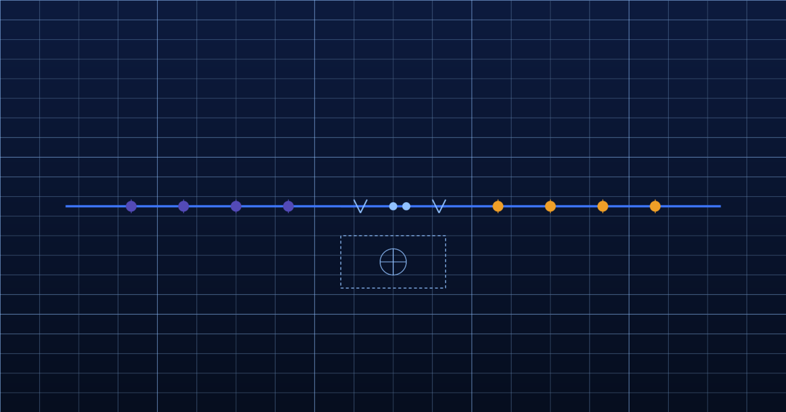

Published 12 February 2026 · 8 min read

Experian's Mosaic classification is one of the most widely used consumer segmentation tools in the UK and across global markets. For data teams in retail, financial services, and telecoms, it is often the first piece of third-party demographic intelligence that gets appended to a CRM, and for good reason: it provides a rich, well-documented typology of consumer behaviour and household characteristics that is significantly more nuanced than age-and-postcode alone.
But Mosaic, like all commercially produced geodemographic classifications, operates on a build-and-release cycle. Experian refreshes the classification periodically — typically every two to three years — drawing on a blend of census data, electoral roll records, financial data assets, and modelled estimates. Each release is a genuine improvement on the last. And each release is, by the time it reaches a client's data warehouse, a picture of a past that may no longer exist.
When clients raise questions about data freshness with their Experian account teams, the standard response is that Mosaic incorporates a wide range of regularly updated data sources. This is accurate. Electoral roll data, for example, updates annually. Financial data assets refresh on various schedules. The blend of inputs means Mosaic is not simply frozen at a single point in time.
But classification is different from raw data. The classification schema — the underlying typology that assigns a consumer or household to a Mosaic type — is rebuilt on a multi-year cycle. The categories themselves, and the rules that determine membership, reflect the structure of the population at the time of the most recent major rebuild. Even when refreshed inputs feed into the model, those inputs are being evaluated against a classification architecture that was designed for the population as it existed two or three rebuilds ago.
This creates a particular problem in periods of rapid structural change. The cost-of-living crisis that accelerated through 2022 and 2023 produced meaningful shifts in household financial behaviour across virtually every Mosaic type. Households classified as "Comfortable Communities" or "Successful Suburbs" in the pre-inflationary period experienced mortgage stress, discretionary spend compression, and changes in shopping behaviour that their Mosaic classification does not reflect. Targeting those households based on a pre-crisis consumer profile means over-investing in customers whose capacity and intent has materially changed.
The cost of demographic data lag shows up most acutely in three areas: credit risk assessment, churn prediction, and campaign targeting efficiency.
In credit risk, a household's Mosaic type is frequently used as a proxy for financial resilience when first-party data is thin. A Mosaic type that historically correlated with low default risk may now contain a meaningful proportion of households under material financial stress — stress that is visible in real-world signals like insolvency filing rates and claimant data, but invisible to a classification built before that stress emerged. Acting on the pre-crisis Mosaic profile means underestimating risk in precisely the segment where risk has risen most sharply.
In churn prediction, the problem is the inverse. Mosaic types associated with high tenure and loyalty may have experienced significant disruption in their financial circumstances — circumstances that correlate strongly with price sensitivity and willingness to switch provider. A telecoms or utilities company relying on Mosaic-derived churn models built before the inflationary period will systematically underestimate the flight risk in segments that were historically stable.
In campaign targeting, the issue is simpler but cumulatively expensive: money is spent reaching households whose purchasing capacity has shifted since the classification was built. A Mosaic type that was a strong predictor of high-value discretionary spend in 2021 may be a considerably weaker predictor in 2026. The model has not updated; the world has.
Quantify your data lag
See exactly how far your Mosaic segments have drifted from current reality. We'll run your postcodes through our live attribute set.
Cogstrata does not compete with Mosaic on the same terms. We do not produce a consumer typology. What we produce is a set of postcode-level attributes — over 500 of them — that are derived from continuously processed real-world event streams. Land Registry transactions, EPC issuance, insolvency filing rates, claimant data, retail opening and closure patterns, macroeconomic signals — these are processed continuously, and the resulting attributes reflect current reality rather than a historical classification.
The practical difference for a financial services client is significant. Rather than segmenting customers by a Mosaic type that reflects their 2022 profile, a Cogstrata-enriched CRM can show their current Mortgage Pressure Delta — a model-derived attribute that reflects the gap between their estimated mortgage obligation and their estimated discretionary income under current interest rate and inflation conditions. That attribute updates as conditions change. A customer who was low-risk in 2022 may register a high Mortgage Pressure Delta in 2026. The Mosaic type will not tell you that. Cogstrata's continuous attributes will.
Replacing Mosaic entirely is not a decision most organisations take lightly, and in many cases it is not necessary. Cogstrata is designed to augment existing segmentation rather than replace it. A client that has Mosaic codes embedded in decades of historical analysis can retain that continuity while layering Cogstrata's real-time attributes on top of their active decisioning layer.
The typical starting point is enriching the current customer base with Cogstrata's financial stress indicators, spend capacity estimates, and real-time macro signals, and comparing the resulting picture against the existing Mosaic-derived segmentation. In most cases, the divergence between the two is large enough to identify meaningful targeting inefficiencies — budget being spent on the wrong segments, risk being underpriced in others — within the first analysis cycle.
Experian Mosaic is a well-constructed product that has served the market for a long time. The argument here is not that it is poorly made. It is that it is made for a world where continuous demographic refresh was not commercially viable. That world has changed. The question for every data and analytics team now is whether their customer intelligence is keeping pace with it.
Compare your current segmentation against real-time data
We'll run a free enrichment sample against your existing customer base and show you exactly where your Mosaic-derived picture has drifted from current reality. No contract, results in 24 hours.
Request a Free SampleCogstrata.ai Research Team
Demographic Intelligence & Data Science
The Cogstrata research team combines expertise in geodemographic classification, macroeconomic modelling, and AI-driven data inference. We write about the intersection of location intelligence, customer data enrichment, and the emerging needs of agentic AI systems.
The CACI Acorn Problem: Why Geodemographic Classifications Are Stuck in 2011
Acorn's core taxonomy hasn't changed since the last census — and it shows.
Beyond the Big Two: Why FS Teams Are Moving Away From CACI and Experian
The quiet but accelerating shift away from legacy geodemographic products.
From Batch to Always-On: The Architecture of Modern Customer Intelligence
The technical shift from periodic batch updates to continuous data refresh.
AI Agent Ready
Demographic intelligence structured for AI agents and human teams alike. API-first, always fresh, privacy-safe.
Enriched results on your own data within 24 hours.